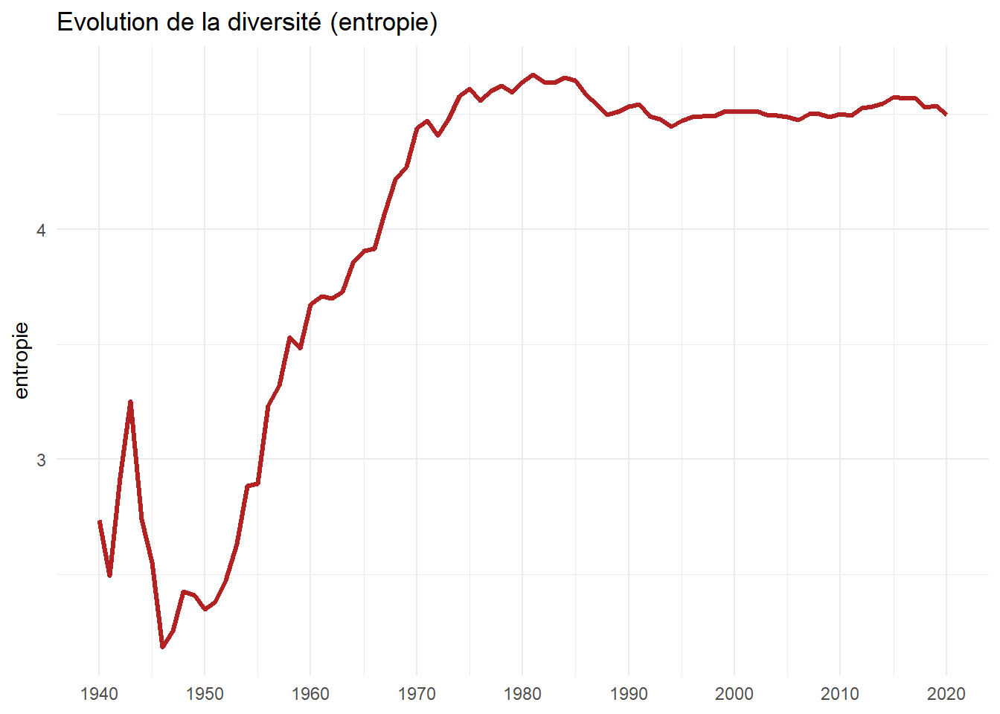
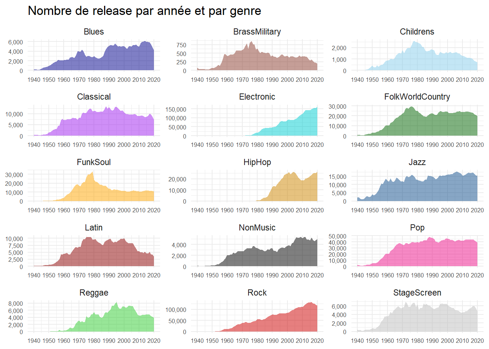

Originaux et rééditions, une dynamique de cycle de vie ?
Author
Affiliation
Christophe Benavent
Paris Dauphine - PSL
Published
January 14, 2023
1 Introduction
La production musicale se déploie par genre, par style, et ce qui est offert au marché, dans chacun de ces segments, c’est un mélange de rééditions d’œuvres, et le lancement œuvres nouvelless. la base de donnée de Discogs propose un corpus intéressant pour faire l’étude de ces stratégies, et plus généralement pour recomposer une histoire de la production musicale.
Un peu de vocabulaire d’abord, dans le dump de Discog, les releases représentent les éditions de l’enregistrement d’une oeuvre musicale elles varient au cours du temps, à travers les pays, ou des formats d’enregistrement, elle peuvent être des réimpressions, des remastering, ou d’autres techniques éditoriales. Les masters représentent la première édition, nous dirons en français les originaux, les autres étant des rééditions.
Dans cette note d’étude, l’objectif est de comprendre la dynamique de la production musicale à travers les genres, tels que Discogs les définit, et notamment la part des éditions originales et celle des rééditions. En effet, le nombre d’éditions originales à un moment donné est un indicateur de créativité. Si au cours d’une période cet indicateur accroît, c’est que le genre à tendance à s’étendre, en apportant plus de nouveautés. Dans le cas contraire, c’est le signe d’un déclin du genre. Les rééditions sont un indicateur de la popularité du genre, si il y a un marché les éditeurs exploitent leur catalogue et relance des “vieilleries”.
Ces deux indicateurs peuvent permettre de définir des situations de marchés qui correspondent sans doute à des stades de cycle de vie. On peut en effet déduire 4 situations de marché :
Les originaux sont en croissance, mais pas les rééditions : le genre est naissant.
Les originaux sont en croissance, de même que les rééditions : le genre est en pleine santé et se développe tout azimuth.
Les originaux sont en décroissance, mais pas les rééditions : le genre est à maturité , il n’attire plus de nouvelles productions mais un marché demeure que les éditeurs exploitent consciencieusement, sans investir dans la nouveauté.
Les originaux sont en décroissance, de même que les rééditions : le genre est déclinant.
L’objectif est d’analyser empiriquement cette idée.
Code
#tools#packageslibrary(tidyverse)library(ggrepel)library(word2vec)library(doc2vec)library(fastcluster) #pour aller plus vite en hclibrary(Rtsne)library(scales)library(zoo)# pour ggplottheme_set(theme_minimal())breaks =c(1900, 1910, 1920,1930,1940,1950,1960,1970,1980,1990,2000,2010,2020)# les couleurs des genres . Y-a-il une conventions ?col_genre<-c("blue4","coral4","skyblue","purple" , "darkturquoise","darkgreen","orange1","orange3","dodgerblue4","darkred","black","deeppink2","limegreen","red3","grey")col_format=c("brown4", "skyblue1", "skyblue2", "skyblue3","grey","cyan", "grey30")col_pays=c("black", "green3","green1","lightblue1", "yellow", "lightblue2", "orange1", "lightblue4", "dodgerblue3", "dodgerblue1", "dodgerblue2","green2","lightblue3", "white", "green4", "orange2", "orange3", "blue3", "blue4")
2 Préparation des données
Le Dump de Discog doit d’abord être parsé. Les fichiers sont en format XML peu pratique pour un traitement statistiques. Ils se présentent sours la formes de plusieurs fichiers :
release
master
Artistes
Genre
Label
Il va falloir réunir ces éléments progressivement pour constituer le fichier général de nos analyses.
Une première étape est de matcher le fichier des masters (qui peuvent être considérés comme des dossiers auxquels appartiennent une ou plus sorties). On obtient ainsi l’identification des versions originales (main_release), et avec quelques manipulation de données, on distinguera des éditions originales, des ré-éditions.
Code
#fichier releaserelease<-read_csv("dataarchives/release.csv") %>%mutate(date=as.numeric(substr(released,1,4))) %>%select(-notes,-released, -data_quality,-status)#fichier mastermaster <-read_csv("dataarchives/master.csv")%>%mutate(master_id=id)%>%select(master_id,year, main_release) # on matche les masters aux release pour identifier l'édition principale (main_release)release<- release%>%left_join(master)%>%filter(date>1939& date<2022) #parce que 2022 est incomplet et moins de 10000 release annuelle avant 1950).#pour economiser de la ram (aux limites de 32go sinon)main_release <-release %>%mutate(main_release=ifelse(is.na(main_release), id,main_release)) %>%group_by(main_release)%>%summarise(n=n(),version="Original")%>%rename(id=main_release)#on recolle les originaux à l'ensemble des versionsrelease<-release %>%left_join(main_release)%>%select(-main_release,-n)%>%mutate(version=ifelse(is.na(version),"Réédition", version))
ggsave(filename="./images/genre00.jpeg", plot=last_plot(), width =27, height =18, units ="cm")
Le nombre total d’éditions est de 13150739 dont originaux et rééditions. dont 7321160 sont des œuvres originales. En première analyse il semble que dans les années 90 un changement de régime s’opère, la création prenant le dessus sur le recyclage. Mais le fait principal est une croissance linéaire de l’offre proposée et en particulier de la nouveauté. Le déclin des ventes de la musique enregistrée n’a pas affaibli le rythme de la progression de l’offre.
Une meilleure vue est obtenue en examinant les proportions annuelles. En 1990 il y a un changement de régime manifeste, il semble que la création prenne le dessus. La proportion des œuvres nouvelles est plus forte que les rééditions. Même si vers 2010 un nouvel équilibre s’établit.
Code
rm(main_release)foo1<-foo %>%group_by(date)%>%summarise(t=sum(n))%>%left_join(foo) %>%mutate(p=n/t)ggplot(foo1, aes(x=date, y=p, groupe=version))+geom_area(stat="identity", aes(fill=version))+labs(title="Répartition des versions entre originaux et rééditions",x=NULL, y=NULL)+scale_fill_manual(values=c("skyblue3", "skyblue1")) +scale_x_continuous(breaks = breaks, limits =c(1940, 2020))+scale_y_continuous(labels = scales::percent_format(accuracy =1))
Code
ggsave(filename="./images/genre01.jpeg", plot=last_plot(), width =27, height =18, units ="cm")
3 Analyse par régions du monde
Les éditions dépendent aussi de la zone commerciale et de distributeurs nationaux. La répartition des éditions par pays montre d’abord la domination anglo-américaine, puis plus largement occidentale si on ajoute l’Europe. C’est très certainement un biais de sélection induit par la population de discog. C’est donc surtout une histoire de la musique occidental. Le phénomène est accusé par le fait que dans certaine région, l’afrique, certains mode d’enregistrement échappent au circuit des labels et des majors.
Cependant, on observe aussi, un renversement à partir des années 70, où la part des éditions européenne a largement reconquis du terrain.
Code
pays <-read_csv("pays.csv") %>%select(-Freq, -1)release<- release %>%rename(pays=country)%>%left_join(pays)foo<-release %>%group_by(pays2, date)%>%summarise(n=n()) %>%group_by(date)%>%mutate(sum=sum(n), p=n/sum) %>%mutate(pays2=ifelse(is.na(pays2),"Others", pays2))ggplot(foo, aes(x=date, y=p))+geom_area(stat="identity", aes(fill=pays2))+labs(title="Répartion des éditions par pays",x=NULL, y=NULL)+scale_fill_manual(values=col_pays)+scale_x_continuous(breaks = breaks, limits =c(1940, 2020))+scale_y_continuous(labels = scales::percent_format(accuracy =1))
Code
ggsave(filename="./images/genre02.jpeg", plot=last_plot(), width =27, height =18, units ="cm")
Pour mieux apprécier l’accroisement de diversité , on va calculer l’entropie, sur la base de la liste initiale des zones géographique. Le résultat est spectaculaire : l’entropie s’accroît jusque dans les années 80, se stabilisant ensuite. Un effet de la globalisation ? En début de période on voit l’effet de la guerre qui déconcentre
Code
foo<-release %>%group_by(pays, date)%>%summarise(n=n())%>%group_by(date)%>%mutate(sum=sum(n), p=n/sum, E=p*log2(p)) %>%group_by(date)%>%summarise(E=-sum(E))ggplot(foo, aes(x=date, y=E))+geom_line(stat="identity")+labs(title="Evolution de la diversité (entropie)",x=NULL, y="entropie")+scale_x_continuous(breaks = breaks, limits =c(1940, 2020))+scale_y_continuous(label=comma)

Code
ggsave(filename="./images/genre03.jpeg", plot=last_plot(), width =27, height =18, units ="cm")
4 Analyse par formats
Sur cette période le fait principal est que la musique enregistrée est passée d’un format à l’autre. Au vynil est venu la cassette, puis le CD et enfin des formats digitaux, sans compter une autre multitudes de supports qui n’ont pas vécu, mais dont la présence dans Discogs signale que certains les ont conservés, et les proposent au marché. On y observe une chose évidente : si jusque dans les années 80 le vynil domine, dans les éditions des années 2020, un tiers des éditions recensées sont des fichiers digitaux.
Code
release_format <-read_csv("dataarchives/release_format.csv") %>%rename(id=release_id)%>%select(id,name, qty) %>%mutate(name=ifelse(name !="Vinyl"& name!="CD"& name!="File"& name!="Cassette"& name!="CDr"& name!="DVD", "Other", name ))foo<-release %>%left_join(release_format)foo1<-foo%>%group_by(name,date)%>%summarise(n=n())ggplot(foo1, aes(x=date, y=n, group=name))+geom_area( aes(fill=name))+labs(title="Répartition par format physique",x=NULL, y="nombre d'éditions")+scale_fill_manual(values=col_format)+scale_x_continuous(breaks = breaks, limits =c(1940, 2020))+scale_y_continuous(label=comma)
Code
ggsave(filename="./images/genre04.jpeg", plot=last_plot(), width =27, height =18, units ="cm")rm(release_format)
5 Analyse par genres
Ce sont les musique électroniques qui remportent la palme, mais le rock a une belle dynamique, même si elle semble fléchir depuis 2020. La production pop est stationnaire.
ggsave(filename="./images/genre05.jpeg", plot=last_plot(), width =27, height =18, units ="cm")
En examinant de manière distincte les genres, on s’aperçoit de phénomène de cycle de vie : Latin, reggae ou soul ont eu leurs heures de gloire, la pop est à maturité depuis longtemps.
Code
ggplot(foo,aes(x=date, y=n, group=genre))+geom_area(stat="identity", aes(fill=genre), size=1.2)+labs(title="Nombre de release par année et par genre",x=NULL, y=NULL )+scale_fill_manual(values=col_genre)+scale_x_continuous(breaks = breaks, limits =c(1940, 2020))+scale_y_continuous(label=comma)+facet_wrap(vars(genre), ncol=3,scale="free")+guides(fill ="none")

Code
ggsave(filename="./images/genre06.jpeg", plot=last_plot(), width =27, height =18, units ="cm")
Ici on examine le rapport des originaux par rapport aux réédition, mais genre par genre, pour tenir compte de cycles de vie distincts.